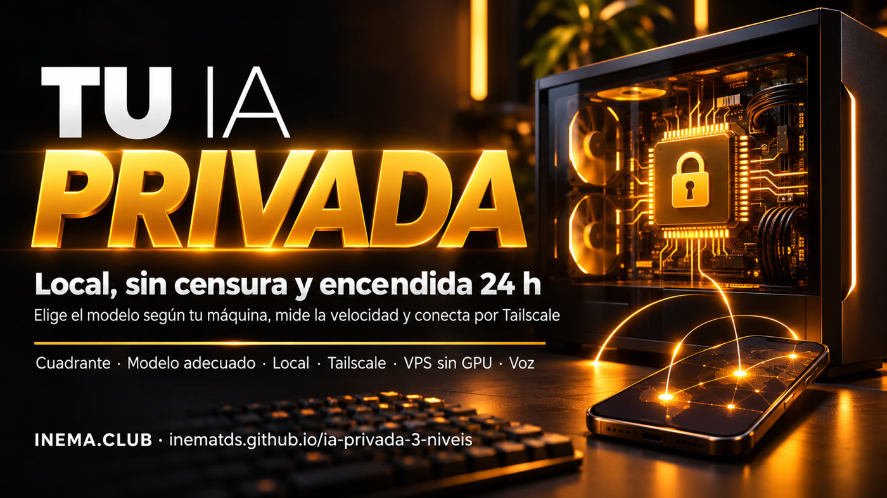

Lo que preguntas no sale de tu computadora y puedes usarla desde el celular desde cualquier lugar sin abrir puertos en internet.

Este es un kit gratuito para ejecutar un modelo de IA abierto en tu propia computadora, sin enviar tus datos a ninguna empresa. Sirve para quienes manejan información sensible (exámenes, contratos, finanzas, registros) o necesitan un modelo que no rechace tareas legítimas. Un script revisa tu máquina e indica el mejor modelo normal y el mejor sin censura que caben en ella. Otro mide la velocidad y comprueba que el puerto esté cerrado. Para usarlo desde cualquier lugar, el kit conecta tus dispositivos por una red privada (Tailscale). Necesitas Python 3.10+, Ollama y, para usarlo fuera de casa, una cuenta gratuita de Tailscale.
No necesitas ningún “sistema operativo de agentes” de pago. Son tres componentes abiertos y algunos scripts que comprueban que todo funciona.
Un modelo sin censura en el servidor de otra empresa. Rápido de empezar, pero la solicitud sale de tu máquina. Está en el kit hermano IA sin censura, de la manera correcta.
Ollama (programa gratuito que ejecuta modelos en la computadora) con el modelo que escolhe_modelo.py recomiende para tu memoria. Nada sale de la máquina.
Tailscale crea una red privada entre tus dispositivos: el celular usa la tarjeta gráfica de casa (Camino A) o un modelo pequeño en una VPS (Camino B).
¿El dato NO puede salir de tu máquina? ¿El modelo normal rechaza lo que necesitas hacer? En el script, --dado-sensivel sim significa “no puede salir”. Pasa a “sin censura” solo cuando el modelo normal rechace una tarea legítima.
python3 kit/scripts/quadrante.py --dado-sensivel sim --recusa nao LOCAL NORMAL quando: Exames, contratos, financas, logs da empresa: nada sai do computador. como: Nivel 2 deste kit: escolhe_modelo.py -> modelo normal.
Computadora de casa: NVIDIA DGX Spark (128 GB de memoria unificada), no una laptop común. Allí el selector recomendaría el 122B; medimos el 27B porque es el modelo que cabe en máquinas de 24 a 99 GB, las más comunes. Para una laptop sin tarjeta gráfica, la referencia más cercana son las barras grises de la VPS. Misma pregunta, respuesta de hasta 160 tokens (fragmentos de palabras), medidos con checa_local.py. Una lectura cómoda está cerca de 10 tokens/s. Los archivos de cada medición están en kit/verificacao/.
La GPU de casa respondió a 17,8 tokens/s en la propia máquina y a 17,6 por la red de Tailscale, en el puerto y con el comando que enseña esta guía.
Cargar el modelo tomó de 16 a 47 s en la VPS. Después permanece 5 minutos en la memoria y responde directamente.
El modelo sin censura y el normal del mismo tamaño quedaron en el mismo rango de velocidad.
Todo es gratuito, excepto la VPS del Camino B, si eliges esa opción.
Los scripts solo usan la biblioteca estándar. Mac y Linux ya los incluyen; en Windows, instálalos desde python.org y git-scm.com. ¿No tienes git? Descarga el ZIP del kit (en portugués).
python3 --version
git --versionEjecuta los modelos. En Linux, usa el comando de abajo; en Mac y Windows, el instalador de ollama.com/download.
curl -fsSL https://ollama.com/install.sh | shRed privada entre tus dispositivos, gratis para uso personal. Instálalo en casa y en el celular, con la misma cuenta.
curl -fsSL https://tailscale.com/install.sh | shLa “ventana” por donde los programas se comunican con Ollama en la computadora.
Solo la propia computadora puede verlo. Es el estado seguro.
Red privada solo entre tus dispositivos. “tailnet only” = solo ellos pueden verlo.
Opción de Tailscale que abre el acceso a todo internet. No la uses con Ollama.
Computadora alquilada en un centro de datos, encendida las 24 h. vCPU = núcleo de su procesador.
Usar un modelo que se ejecuta en el servidor de otra empresa, pagando por uso.
Mac (chips M) y algunas máquinas con GPU: la misma memoria sirve al procesador y a la tarjeta gráfica.
Configuración que abre Ollama a cualquier red. El kit lo marca como “abierto”.
“Abliterated” = versión sin censura de un modelo abierto. huihui_ai publica estas versiones en la biblioteca de Ollama.
Miles de millones de parámetros: el tamaño del modelo. Uno más grande responde mejor y necesita más memoria.
Modelo grande que usa solo 3B por palabra (“MoE”): ocupa memoria como uno grande y responde casi a la velocidad de uno pequeño.
Familia de modelos abiertos de Alibaba. El kit usa las versiones 3.5, 3.6 y 3.8.
Ubuntu = Linux de la VPS. ssh = acceder a su terminal desde la tuya (la IP aparece en el panel del proveedor). root = administrador de la VPS.
GPU = tarjeta gráfica. sudo = ejecutar un comando como administrador en Linux/Mac (te pide tu contraseña).
python en lugar de python3. Los scripts funcionan, pero la comprobación del puerto de checa_local.py solo está disponible para Linux y Mac. Los Caminos A y B usan comandos de Linux: en Windows, ejecútalos en la máquina Linux (o en la VPS) y usa Windows solo como dispositivo de acceso.Ejecuta los comandos en la carpeta del proyecto. ¿Prefieres que un asistente lo haga por ti? Cada paso tiene un prompt listo en kit/prompts/.
Las pruebas no usan internet ni Ollama: solo comprueban que los scripts estén correctos. Si no tienes git, descarga el ZIP (requisitos) y abre la terminal dentro de la carpeta.
git clone https://github.com/inematds/ia-privada-3-niveis.git cd ia-privada-3-niveis python3 -m unittest discover -s kit/testes -v # termina con OK
El script lee la memoria (tarjeta gráfica, memoria unificada del Mac o RAM) y el disco. Muestra dos modelos y el comando para descargarlos, pero no descarga nada automáticamente.
Los scripts del kit muestran sus mensajes en portugués; el significado de cada línea está explicado en esta página.
python3 kit/scripts/escolhe_modelo.py Memoria: 16.0 GB (RAM / memoria unificada); util para modelo: 14.0 GB Disco livre: 80.0 GB Melhor local (normal): Qwen 3.5 9B -> ollama pull qwen3.5:9b (6.6 GB) uso: bom equilibrio para 16 GB Melhor local (sem censura): Qwen 3.5 9B -> ollama pull huihui_ai/qwen3.5-abliterated:9b (6.6 GB)
| Memoria | Normal | Sin censura | Descarga |
|---|---|---|---|
| 4–5 GB (solo prueba) | qwen3.5:0.8b / qwen3.5:2b-q4_K_M | huihui_ai/qwen3.5-abliterated:0.8B / :2B | 1–1,9 GB |
| 6–9 GB | qwen3.5:4b | huihui_ai/qwen3.5-abliterated:4B | 3,3 GB |
| 10–23 GB | qwen3.5:9b | huihui_ai/qwen3.5-abliterated:9b | 6,6 GB |
| 24–99 GB | qwen3.8:27b | huihui_ai/Qwen3.8-abliterated:27b | 18 GB |
| 31 GB o más (alternativa rápida) | qwen3.6:35b-a3b | huihui_ai/Qwen3.6-abliterated:35b-a3b | 23–24 GB |
| 100 GB o más | qwen3.5:122b | huihui_ai/qwen3.5-abliterated:122B | 81 GB |
checa_local.py hace una pregunta, mide la velocidad, comprueba el puerto y guarda un archivo nuevo con el nombre del modelo en kit/verificacao/, junto a las mediciones de esta guía. La línea del puerto debe decir loopback (en Windows no aparece; es normal). Si aparece “Ollama no respondió” (o Ollama não respondeu), abre la aplicación de Ollama o ejecuta ollama serve.
ollama pull huihui_ai/qwen3.5-abliterated:9b python3 kit/scripts/checa_local.py --modelo huihui_ai/qwen3.5-abliterated:9b # Porta 11434 nesta maquina: loopback ['127.0.0.1'] # Velocidade: ... tokens/s
Para salir, escribe /bye. En la terminal, pega el texto del documento en la pregunta. ¿Prefieres una ventana? La aplicación de Ollama (Mac y Windows) conversa con los modelos descargados y permite arrastrar archivos. Los modelos normal y sin censura quedan descargados uno junto al otro: para cambiar, solo tienes que indicar otro nombre.
ollama run huihui_ai/qwen3.5-abliterated:9b
Documento en PDF: conviértelo a texto y envíalo junto con la solicitud. pdftotext viene en el paquete poppler-utils (Linux) o brew install poppler (Mac). En Windows, lo más fácil es usar la aplicación de Ollama: elige el modelo y arrastra el archivo a la conversación; todo se ejecuta en tu computadora. Un documento muy largo (decenas de páginas) puede superar el límite de texto del modelo: divídelo en partes.
pdftotext contrato.pdf contrato.txt
cat contrato.txt | ollama run huihui_ai/qwen3.5-abliterated:9b "Resume en 2 líneas: monto, vencimiento y multa."
Primero, inicia sesión en tu cuenta de Tailscale desde esta máquina: en Linux, sudo tailscale up muestra un enlace para abrir en el navegador; en Mac y Windows, la aplicación te pide iniciar sesión al abrirse. Después, publica Ollama solo en tu red privada. El estado debe decir “tailnet only”. Si aparece “Access denied”, ejecuta una vez sudo tailscale set --operator=$USER.
sudo tailscale up tailscale serve --bg --tcp 11434 tcp://127.0.0.1:11434 tailscale serve status # debe mostrar "tailnet only" tailscale ip -4 # la dirección 100.x.y.z para usar en el celular
En el celular, instala la aplicación de Tailscale e inicia sesión con la misma cuenta. Después instala una aplicación que se comunique con Ollama, como Ollama App (Android) o Enchanted (iPhone), e indica como dirección del servidor http://100.x.y.z:11434. En la laptop, esa misma dirección sirve para checa_local.py:
python3 kit/scripts/checa_local.py --base-url http://100.x.y.z:11434 --modelo huihui_ai/Qwen3.8-abliterated:27b --nome casa-pelo-tailscale
Para apagarlo: tailscale serve --tcp 11434 off.
Para quienes no dejan la computadora encendida. La VPS común no tiene tarjeta gráfica: hasta 9B, a la velocidad del gráfico anterior. Contrata una VPS Ubuntu con 8 GB o más y abre su terminal (mediante ssh root@<IP> o la terminal web del proveedor). Como root, ejecuta:
curl -fsSL https://ollama.com/install.sh | sh ss -ltn | grep 11434 # solo 127.0.0.1:11434 curl -fsSL https://tailscale.com/install.sh | sh tailscale up # abre en el navegador el enlace que aparezca e inicia sesión tailscale serve --bg --tcp 11434 tcp://127.0.0.1:11434 ollama pull huihui_ai/qwen3.5-abliterated:4B git clone https://github.com/inematds/ia-privada-3-niveis.git cd ia-privada-3-niveis python3 kit/scripts/checa_local.py --so-porta
Prueba de que quedó cerrado: desde tu computadora, http://<IP pública de la VPS>:11434 debe fallar y http://<IP Tailscale de la VPS>:11434 debe responder. Con tailscale serve activado, --so-porta en la VPS muestra tailscale; desactivado, muestra loopback. Ambos son seguros; aberto nunca lo es. Si no inicias sesión como root, agrega sudo antes de tailscale up y tailscale serve.
El kit gratuito Jarvis Local ya permite conversar por voz 100 % localmente. Agrega a su estante de cerebros las entradas sem_censura y casa de kit/config/jarvis-cerebros.exemplo.json y di “cambia al cerebro sin censura”. La voz necesita una tarjeta gráfica: en la VPS del Camino B, solo texto.
| Prompt listo | Qué hace el asistente |
|---|---|
| 01 · Instalar y elegir (en portugués) | Instala Ollama con tu aprobación, ejecuta el selector, descarga lo que elijas y mide. |
| 02 · Casa por Tailscale (en portugués) | Camino A, comprueba “tailnet only” y nunca usa funnel. |
| 03 · VPS siempre conectada (en portugués) | Camino B, con la prueba de que el puerto público quedó cerrado. |
Un modelo abliterated es un modelo abierto al que le quitaron el reflejo de rechazar. Responde casi todo, por eso las reglas de abajo hacen de freno.
OLLAMA_HOST=0.0.0.0, puertos abiertos en el router ni tailscale funnel. checa_local.py --so-porta marca aberto y termina con un error.